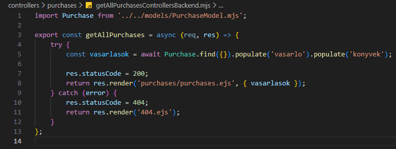

Vásárlás kezelése - getAllPurchasesControllersBackend.mjs
Vásárlás kezelése - getAllPurchasesControllersBackend.mjs

Ebben a részben szerkesztjük a controllers/purchases mappában a getAllPurchasesControllersBackend.mjs állományt, amelyben kidolgozzuk a CRUD Read művelethez tartozó logikát. Ez megfelel a http GET metódus-hoz tartozó logikának.
-
Szerkesszük a
getAllPurchasesControllersBackend.mjsállományunkat.-
import Purchase from '../../models/PurchaseModel.mjs';- aPurchasemodell alapértelmezett beimportálása. -
export const getAllPurchases = async (req, res) => {...};- hozzuk létre és vigyük ki nevesítve ahttp GET metódus-hoz tartozó logikát (ReadaCRUDműveletekből). -
try {... res.statusCode = 200; return res.render('purchases/purchases.ejs', { vasarlasok }); }- a sikeres ág a 200-ashttp hibakód-dal. A vásárlásokat átadjuk apurchases/purchases.ejsállománynak. -
const vasarlasok = await Purchase.find({}).populate('vasarlo').populate('konyvek');- keressük meg a vásárlásokat, majd helyettesítsük be avasarloéskonyvekértékeket ausersilletvebooksgyűjteményekből. -
catch (error) { res.statusCode = 404; return res.render('404.ejs'); }- a sikertelen ág a 404-eshttp hibakód-dal.
-